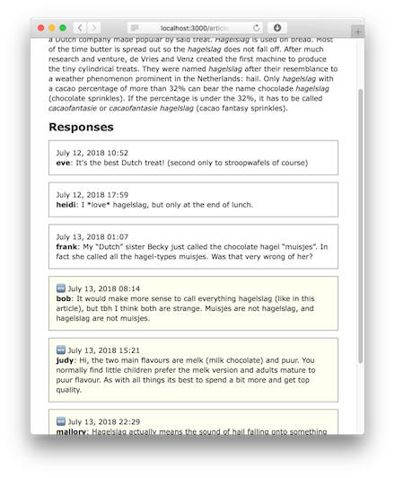

RUDOLF IVANKOVIC
Experienced Web & Mobile DeveloperBlog Posts
JavaScript-sprinkled Rails Applications
Rails' fragment caching produces greater speedups when a bigger part of the page is cached. This is more difficult for pages with a lot of dynamic or user-specific content.
A solution is to use “JavaScript sprinkles”, which is like hagelslag, but without the chocolate and with extra requests to load user-specific content after the rest of the page is directly served from the cache.
Fragment caching
Techniques like fragment caching are used to speed up responses in Rails
applications by caching fragments of the rendered page.
By using smart cache
keys, the fragments are automatically invalidated when their content changes
because the data shown in the view is updated.
Caching view fragments provides a larger speed boost from a smaller cache when
the cached fragments are used more often.
When the content of the page
depends on the currently signed in user, for example, caching the page's
fragments becomes more difficult.
Unread Responses
As an example, let's take a Rails-based blog.
On this blog, each article can have
a number of responses.
An authentication system was added to allow users to sign
in and post responses with their accounts.
On each article page, we list the
responses.
To make it easier for our users, we mark the new responses with an
icon and a different background color.

If we wrap each article in a cache block, we run the risk of marking the wrong responses as unread. When a user requests the index page, the response is cached. When another user requests the same page later, they will receive the cached fragment, with the unread responses of the first user.
# app/views/articles/show.html.erb<%= cache(@article) do %> <h1><%= @article.title %></h1> <%= simple_format(@article.content) %>
<section id="responses"> <h2>Responses</h2> <% @article.responses.each do |response| %> <div class="<%= response.read_by?(@current_user) ? 'read' : 'unread' %>"> <%= time_tag(response.created_at) %> <strong><%= response.name %></strong>: <%= response.content %> </div> <% end %> </section><% end %>A way to solve this is by adding the currently signed in user to the cache key by using [@article, @current_user] instead of just @article as the argument passed to the cache helper method.
This ensures that each user sees their own unread responses, but negates most of the speedup from caching the fragments, as the article fragments are now cached separately for each user.
JavaScript Sprinkles
Since most of the page is the same for all users, we'd like to reuse the cached article fragment for each visitor. To do this, we can load the article from the cache and add an extra request to fetch the user-specific content after the page is loaded through a JavaScript request. Using a sprinkle of JavaScript functionality for this has a couple of advantages:
The page can be cached once and be reused for unauthenticated guests, as well as other users without having to separately cache fragments for every user.
The most important content is loaded first for the fastest response time and secondary features, like the unread count, are loaded later.
Since the extra request is done via JavaScript, the whole page can be edge-cached on a CDN to further improve performance.